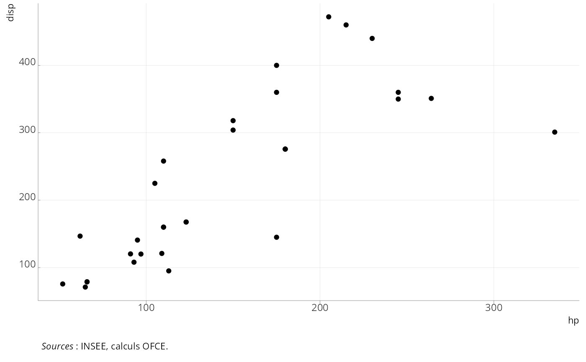

fabricateur de source
ofce_caption.Rdpermet de construire un caption facilement avec un wrapping, le passage dans glue et la traduction marquee (pour ggplot)
Arguments
- ...
autres paramètres
- source
texte de la source (sans le mot source qui est rajouté)
- note
texte de la note (sans le mot note qui est rajouté)
- lecture
texte de la note de lecture (sans le mot lecture qui est rajouté)
- champ
texte du champ (sans le mot champ qui est rajouté)
- code
texte du code (sans le mot code qui est rajouté)
- xlab
inclu le label de l'axe des x (pour le traduire avec marquee/glue)
- ylab
inclu le label de l'axe des y (pour le traduire avec marquee/glue)
- subtitle
inclu le label du sous titre (pour le traduire avec marquee/glue)
- title
inclu le titre (traduit aussi)
- dpt
dernier point connu
- dptf
fréquence du dernier point connu (day, month, quarter, year)
- wrap
largeur du texte en charactères (120 charactères par défaut, 0 ou NULL si on utilise marquee)
- ofce
(bool) si TRUE ajoute calculs OFCE à source, sinon rien, TRUE par défaut
(bool) si TRUE ajoute calculs des auteurs à source, sinon rien, FALSE par défaut
- srcplus
(string) chaine (comme calculs OFCE) à ajouter à source (à la fin)
- lang
langue des textes (fr par défaut)
- marquee_translate
transforme ^x^ en .sup x et ~x~ en .sub x
- glue
applique glue avant toute chose
Examples
library(ggplot2)
ggplot(mtcars)+geom_point(aes(x=hp, y=disp)) + theme_ofce(marquee=TRUE) + ofce_caption(source="INSEE")

head(mtcars) |> gt::gt() |> ofce_caption(source="INSEE")
mpg
cyl
disp
hp
drat
wt
qsec
vs
am
gear
carb
Sources : INSEE, calculs OFCE.